01 / THE PROBLEM
Workforce usage observability
Raw request volume mixes deliberate work with automatic background traffic. A polling-heavy screen can produce many requests without the user starting or completing any additional tasks.
Management needed a report they could refresh and interpret without learning internal procedure names or asking someone to rebuild a static snapshot.
02 / MY CONTRIBUTION
This additional example comes from the workforce usage-reporting implementation: a Cloudflare Worker, driver-independent SQL aggregation, and a shared browser interface for live and static reports.
03 / ARCHITECTURE
Aggregate on the server, explore in the browser

Read the Mermaid definition
flowchart LR
DB[(Request logs and employee mappings)] --> SQL[Server-side SQL aggregation]
SQL --> REG[Classify actions and background traffic]
REG --> PAY[Compact reporting payload]
PAY --> UI[Browser dashboard]
UI -->|Refresh| W[Cloudflare reporting Worker]
W -->|TiDB HTTP SQL driver| SQL
UI --> F[Date / team / category filters]
F --> V[Detailed view / activity map / exports]
SNAP[Static snapshot producer] -. Same UI contract .-> UI
04 / HOW IT WORKS
Read the recorded activity
SQL queries aggregate request logs by person, action, and day, and join employee and team mappings. The reporting path reads the operational database rather than triggering workflow writes.
Classify deliberate and automatic actions
The action registry distinguishes task starts, pauses, completions, and report views from queue polling and session refresh traffic.
Present recognizable views
The report offers a detailed dashboard, a plain-language at-a-glance view, and a person-by-day activity map. Date, department, category, and employee filters share the same payload.
Refresh without a rebuild
The browser fetches a new aggregate payload on refresh. The same interface can also display a static snapshot, keeping rendering and data collection separate.
05 / ENGINEERING DECISIONS
Use business actions as the reporting unit
Separating background presence from deliberate actions prevents raw polling volume from becoming an apparent measure of engagement.
Keep database access on the server
The Worker uses an HTTP SQL driver appropriate to its runtime. Database credentials stay out of the browser, which receives reporting data rather than SQL access.
Bound the interpretation
An activity gap is an observation about recorded app use. It is not automatically a measure of employee productivity, offline work, or task quality.
06 / OUTCOME & SCOPE
- Made application usage readable as task and reporting actions.
- Provided team and activity views with refresh and export controls.
- Separated operational activity from automatic traffic in the reporting model.
Reading this case study
The case study publishes the reporting architecture, not employee records or production telemetry. Retention limits the available history. No headcount, individual activity, or benchmark performance figures are published.
Reviewed the reporting README, action-category registry, SQL aggregation, and Worker routes.
Diagrams are abstracted from the workplace system. Customer records, credentials, internal endpoints, and proprietary source code are not included.